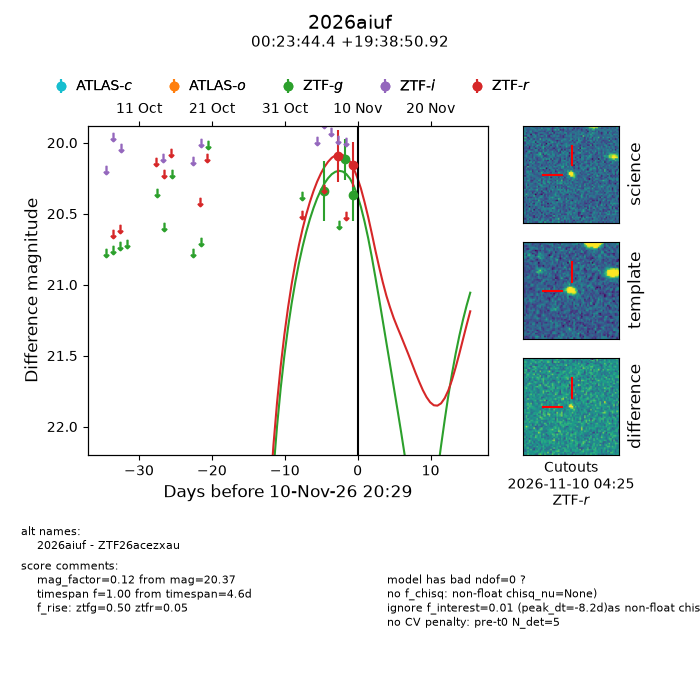
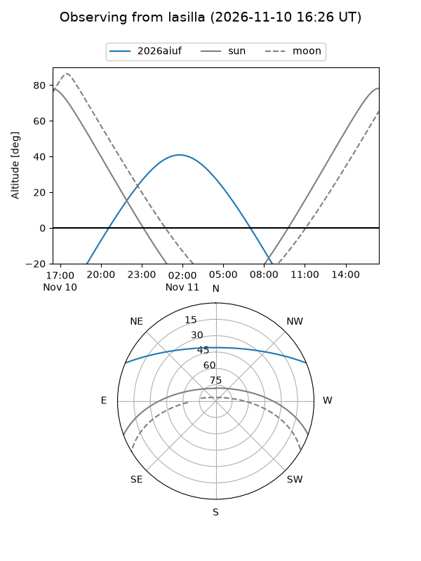
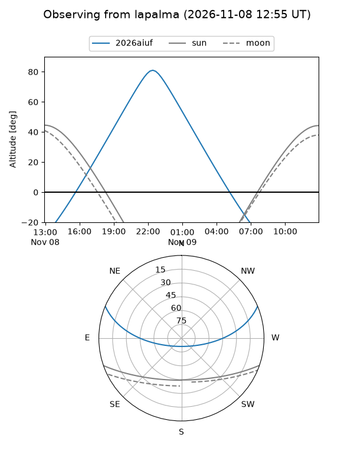
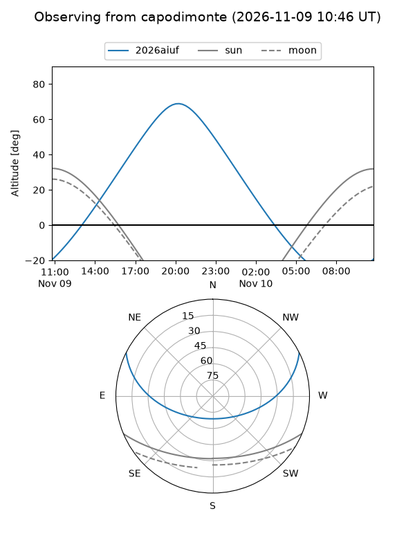
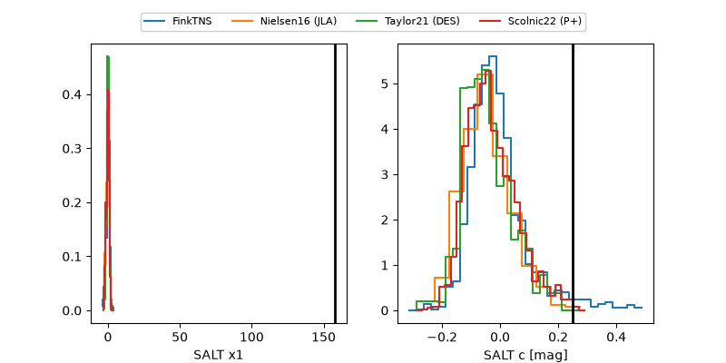

2026aiuf
Target 2026aiuf at 2026-11-10 20:32
Aliases and brokers:
FINK-ZTF: ztf.fink-portal.org/ZTF26acezxau
Lasair-ZTF: lasair-ztf.lsst.ac.uk/objects/ZTF26acezxau
ALeRCE-ZTF: alerce.online/object/ZTF26acezxau
YSE-PZ: ziggy.ucolick.org/yse/transient_detail/2026aiuf
TNS name: wis-tns.org/object/2026aiuf
Direct TNS query: direct search
alt names
ZTF26acezxau (ztf,fink_ztf)
2026aiuf (tns,yse)
Coordinates:
equatorial (ra, dec) = 5.9349,+19.64748
equatorial (HMS+DMS) = 00:23:44.38,+19:38:50.92
galactic (l, b) = (114.0377,-42.74542)
Flags:
peak dt: -8.2
Photometry:
last ztfg=20.37, ztfr=20.15
3 ztfg, 2 ztfr detections
Lightcurve

Visibility



Additional plots
